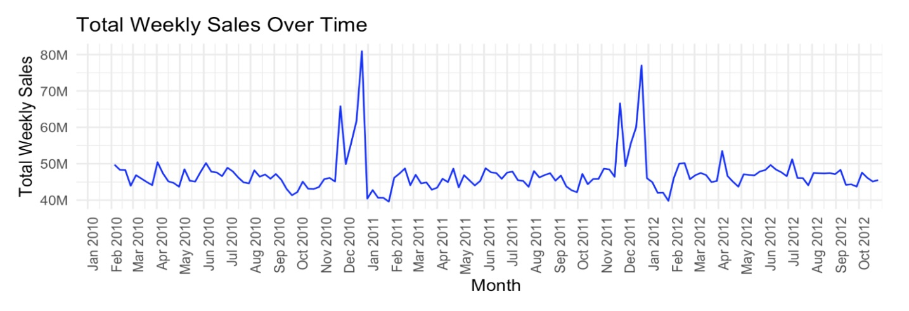
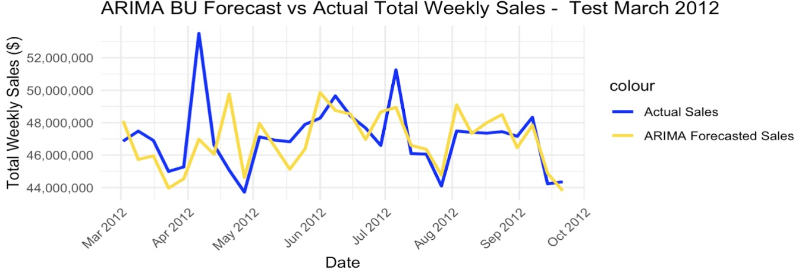

Project Goal:
This analysis proposes hierarchical forecasting as an approach to forecasting total weekly sales for Walmart retail stores. It uses data on sales volumes for 45 stores reported weekly for two and a half years, along with exogenous variables including CPI, Gas Price and Unemployment.
Methodology:
I used SARIMA-X hierarchical time series forecasting, such that the sales forecast of 45 individual stores was aggrregated at each point in time to forecast the total volume of sales.
Key Findings:
This model adequately forecasted total sales volume unless there was a large shock in the market at the end of the training period. RMSE was approximately $3.4M, which was in line with expectation for this dataset.
Key Code Sections:
# Arima for one store
values = function(train, test, i){
# Fit auto.arima with seasonality
fit = auto.arima(ts(train[train['Store']==i,]['Weekly_Sales'],frequency=52 ), seasonal = TRUE)
forecast = forecast(fit,h=43)
#print(summary(fit))
forecast$mean
}
# Store all forecasts in a list (each element is a vector of length 43)
store_forecasts = lapply(1:45, function(i) values(train, test, i))
# Sum forecasts across all stores while keeping the 43-day structure
aggregated_forecast = Reduce(`+`, store_forecasts)
rmse_hier_arimax = sqrt(mean((aggregated_forecast - complete_set_test$Weekly_Sales)^2, na.rm=TRUE))
print(paste("RMSE (in dollars):", round(rmse_hier_arimax, 2)))
actual_total_sales <- test %>%
group_by(Date) %>%
summarise(Total_Sales = sum(Weekly_Sales)) %>%
arrange(Date)
n_common = min(nrow(actual_total_sales), length(aggregated_forecast))